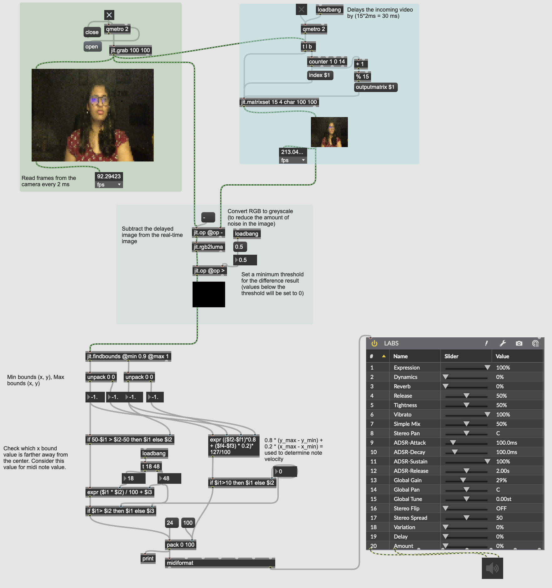

Movement Led Music Synthesis Program - Work In Progress
By Nithya Shikarpur25 November 2019
I came across Max/MSP/Jitter about a month ago with the course called Twisted Signals by Prof. Jesse Stiles. Inspired by the flexibility of the language, I decided to program a movement based music synthesis program. As a dancer, I wanted to explore the possibility of letting the music follow my lead instead of choreographing my steps to the music. This is demo of the project in it’s very initial stages.
How it works
I capture movement from my camera at 500 fps. Each frame is captured as a matrix.
I subtract a 30 ms delayed frame matrix from the current frame matrix in order to capture the movement on an individual.
The difference of frame matrices are used to decide the midi note value and velocity. Note values increases from the left to the right of the screen and the velocity is determined by how “big” the movement is.
All sounds from this demo are produced with Spitfire Audio’s plugins.

Screenshot of max patch being used
Demo of Project
Possible directions to work in
Try to detect the skeleton of a person (possibly using OpenPose) and use that data to control the music. This would make the sound more controllable.
Interact with dancers of different styles and understand their perspective and thoughts
I want to also experiment with Indian sounds and Indian forms to see how that works.
I would love to know any thoughts or feedback on this project. Please feel free to shoot me a mail or get in touch on social media :)